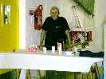
L'hiver est quasiment là : ou il pleut, ou on se les gèle, mais la saison Indoor permet de continuer à voler. A Plaisir, faut d'abord trouver où c'est ! Rien d'indiqué sur le site, pas d'indications sur place. Alors on demande au premier gymnase venu... Mais quand on a trouvé, c'est bien. Déjà, à l'arrivée le toujours serviable Grand Chambellan offre un petit café-croissant, ça fait du bien !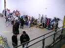
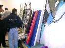
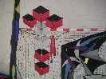
Il a aussi amené des monofils comme ce très beau "Cubes" d'inspiration allemande par "Premier Kites".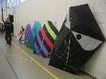
En déco sur les murs de la salle, on fait d'ailleurs surtout appel aux monofils... Par exemple une série de rokkakus de toutes les tailles, jusqu'à ce masque sombre et menaçant...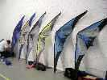
Mais Alain Jouny a amené sa série de Mystery, où l'on peut voir l'évolution de la fabrication depuis le proto jusqu'à la série, et plusieurs versions de taille ou finitions différentes.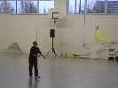
Les concurrents se succèdent, il y a même un italien, Tullo Lolli venu de Cervia avec toute sa famille...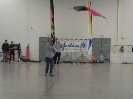
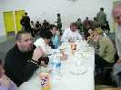
Après les imposées, ouf, c'est la bouffe (voir complainte de la Beauce, à paraître).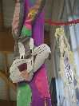
Ensuite, retour dans la salle. Un rabbit a pris place sur une manche à air. Remarquez le complexe travail de matelassage, avec 2 épaisseurs fourrées de ouate pour donner du volume.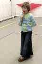
Ça amusera les petits qui jouent tout autour. Les pantalons en pattes d'éléphant reviennent à la mode, au moins pour les jeunes, et caricaturées.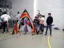
Il y a aussi une catégorie 4 lignes. Les Révos attendent sagement leur heure dans un coin de la surface.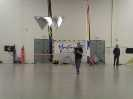
Un des concurrents a même réalisé pour l'indoor un révo en Milar, un coté doré, un coté argent. Ça jette pour les flic-flacs !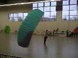
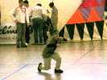
Yann Derweduwen améliore encore son ballet en en dansant le début les yeux bandés !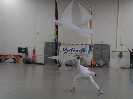
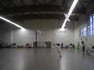
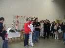
Enfin, c'est la remise des prix attendue par tous les concurrents (et aussi par les autres, y a un pot après...) ! J'ai pris une catégorie au hasard, c'est Jeremy Anquier sur la plus haute marche (on dirait pas...).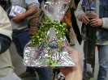
Des prix, il y en avait, des CD, des stylos, des jeux, des portefeuilles (vides), des T-shirts, des cerfs-volants... Le grand vainqueur a, entre autres, reçu ce beau prix qui complétera sa collection !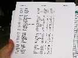
Si vous voulez les résultats complets, y a qu'à demander, les voilà dans la main de Franck... (le François Périau à la fin n'est PAS notre François de l'Antenne de Beauce).!